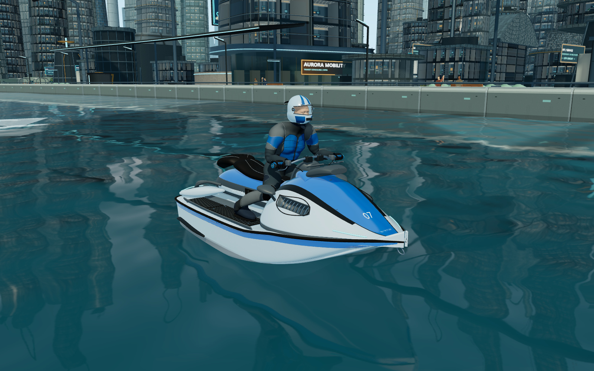

62.5%
纹理 API 存储估算减少
36.4%
浏览器私有提交减少
16.0 分钟
真实时间连续驾驶，不是加速回放
同机位对照
左为本轮前的 b17679f，右为已通过本页测试的版本。相同机位、标准画质、1600×1000；没有重新调色。

逐项验收图集
七场景性能
RTX 4060 Laptop / Ryzen 9 7945HX / Edge。相同 1600×1000、DPR1、标准画质；预热 120 帧，测 360 帧。测量时解除渲染上限，正式默认 60；物理始终固定 60Hz。CPU 数值含提交与同步等待，GPU 使用非 disjoint 的浏览器计时查询。
| 场景 | FPS | 1% Low FPS | GPU ms | Draw Calls | 本版三角数/帧 |
|---|---|---|---|---|---|
| 进入赛道 | 30.8 → 34.7 | 18.1 → 29.6 | 32.4 → 28.6 | 975.5 → 975.5 | 97.9 M |
| 中央商务区 | 65.9 → 67.7 | 46.7 → 49.4 | 15.3 → 14.9 | 453.1 → 453.1 | 35.1 M |
| 密集科技区 | 33.6 → 36.8 | 27.1 → 28.9 | 28.9 → 26.4 | 867.0 → 866.9 | 91.9 M |
| 高架水道 | 34.2 → 37.6 | 27.1 → 27.6 | 29.8 → 27.3 | 966.4 → 966.4 | 90.3 M |
| 高速行驶 | 65.3 → 68.8 | 33.0 → 35.8 | 15.1 → 14.3 | 533.2 → 533.2 | 38.1 M |
| 五艇同屏 | 38.0 → 41.5 | 28.1 → 30.5 | 26.3 → 24.1 | 756.5 → 756.5 | 77.6 M |
| 水花与氮气 | 38.5 → 41.2 | 25.8 → 27.0 | 25.8 → 24.3 | 725.5 → 725.5 | 73.4 M |
多艇高精度场景仍未达到普遍稳定 60 FPS，进入赛道与普通驾驶的 1% Low 也并非全部提高。完整数据如实保留，未把峰值当作全程成绩。
内存与资源
| 指标 | 原版 | 本版 |
|---|---|---|
| 纹理分配估算 / MiB | 1095.1 | 410.4 |
| 顶点/索引分配 / MiB | 273.2 | 265.2 |
| 浏览器私有提交 / MiB | 4427.4 | 2814.6 |
| 浏览器私有驻留 / MiB | 2742.7 | 1844.2 |
| JS Heap / MiB | 68.8 | 57.3 |
| ArrayBuffer 等 backing store / MiB | 297.6 | 504.0 |
| 本机首次加载 / ms | 9287 | 9778 |
WebGL 纹理与 buffer 是 API 请求的分配估算，不是游戏独占物理显存。浏览器私有提交与实际驻留分别列出。压缩 mip 数据保留在 CPU 侧，ArrayBuffer 指标升高，总进程内存下降。首次加载时间变化较小，不代表互联网连接速度。
标准画质仍是 320 水网格、1024 反射、2048 城市与车手阴影。最高画质提高反射与城市阴影精度；高/标准使用同一套完整高模。
第二轮水滴与档位检查
相同转弯输入、随机种子和镜头。新增日光高光与透明边缘，粒子数量不变；提前裁掉完全透明的池内点。


高与标准共用完整高模；高档提高反射和城市阴影精度。


实际质量改动与保留的边界
- 船头弧边护件与原插槽、车手颈部护领与平滑肩部色区；保留模型精度、UV、骨骼、握把接触及队伍颜色。
- 织物与橡胶粗糙度、近景入口雨棚/圆角框架、随船接触波纹、破碎水冠和喷流压力节，使用已有材质组或固定容量池。
- 共享模型与图像源在最后一个用户释放时清理，解码线程终止；重开/切换/回首页与启动取消通过。
- 完整三圈、两条捷径、四 AI 完赛、双客户端五秒共同倒计时、断线重连、七种手机布局都保留原数据证据。
仍有短板：高面数多艇场景、人物面部与局部服装、近距离市民、部分建筑重复、单平面反射和小规模粒子系统的表现上限。没有宣称达到电影级人物或真实流体。